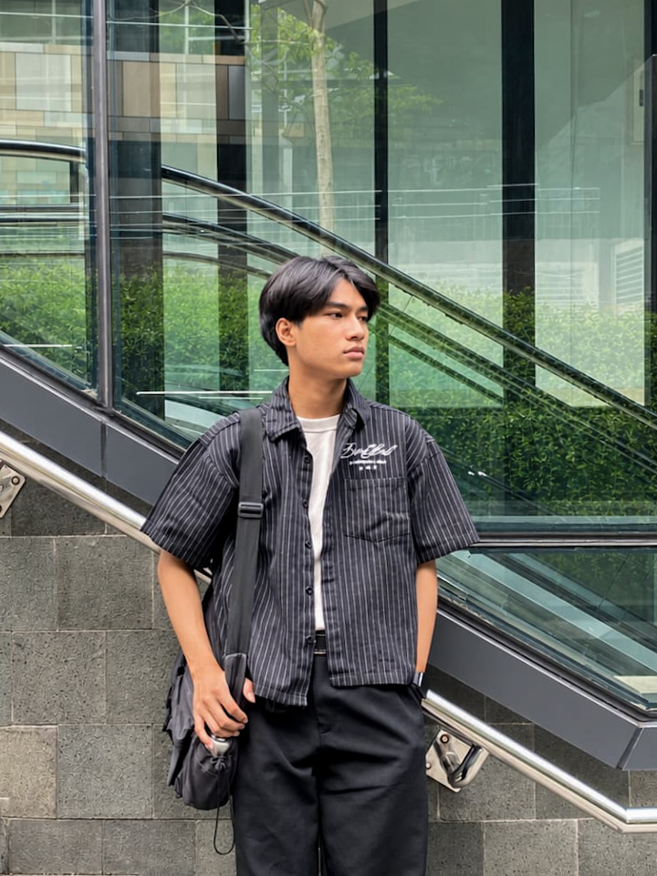
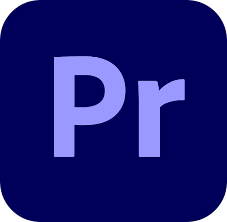
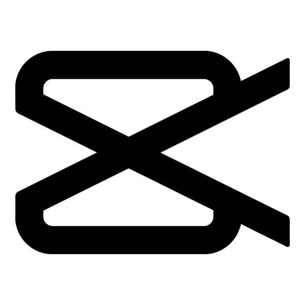

VIDEO EDITOR & VIDEOGRAFER
Menciptakan cerita dalam audio & visual yang kuat melalui penggabungan teknik videografi, video editing, dan audio mixing.

PROFIL LENGKAP
Lulusan S1 Ilmu Komunikasi Universitas Serang Raya dengan pengalaman profesional sebagai Video Editor & Videografer. Memiliki keahlian dalam videografi, video editing, audio mixing & mastering, serta produksi konten kreatif. Berbekal pengalaman kerja full-time di PT Senmy Kosmetik Indonesia dan pengerjaan berbagai proyek audio-visual, saya terbiasa bekerja secara kolaboratif dalam tim, adaptif terhadap perkembangan tren media, serta berfokus pada penyajian visual yang estetik dan komunikatif.
Pendidikan
S1 Ilmu Komunikasi
Universitas Serang Raya (2021-2025)
Spesialisasi
Video Editor, Videografer &
Audio Mixing
PENGALAMAN KERJA & MAGANG
Pengalaman profesional di bidang produksi video, media, dan penyiaran.
Editor Video
PT Senmy Kosmetik Indonesia
Memproduksi dan mengedit 12–15 video pendek per hari menggunakan CapCut untuk kebutuhan pemasaran digital, khususnya TikTok.
Mengolah footage mentah menjadi video promosi produk yang dinamis, menarik perhatian audiens, serta meningkatkan interaksi brand.
Broadcasting & Video Editor
Radio Republik Indonesia (RRI Banten)
Menjadi operator live streaming YouTube RRI dalam berbagai acara talkshow dan program siaran interaktif.
Melakukan dokumentasi kegiatan harian serta peliputan acara resmi selama bertugas di RRI Banten.
KEAHLIAN PROFESIONAL
Bidang keahlian mendalam yang saya kuasai dalam produksi dan pasca-produksi audio & visual
Videografi
Pengambilan video dengan teknik kamera, tata cahaya, dan komposisi artistik untuk mengabadikan momen secara optimal.
Video Editing
Merangkai footage, color grading, motion graphics, dan transisi menjadi alur cerita yang dinamis serta sesuai tren digital.
Mixing & Mastering
Pengolahan audio profesional, dan mastering agar suara berstandar komersial.
SOFTWARE YANG DIKUASAI

Adobe Premiere
Video Editing & Cinematic Cut

CapCut
Short-Form & TikTok Campaign

Canva
Design & Konten Kreatif
Cubase Pro
Audio Mixing & Mastering
BEST PROJECT
Beberapa pilihan projek yang pernah saya kerjakan dari tahun 2021-2026.
Film Pendek "Melukis Doa"
Berperan sebagai Director of Photography (DOP) dan Kameramen dalam produksi film pendek berjudul “Melukis Doa” (2024). Bertanggung jawab dalam pengambilan gambar, menentukan komposisi visual, serta mengatur pergerakan kamera untuk mendukung alur cerita dan membangun suasana film.
The Engagement
Berperan sebagai Kameramen dalam produksi video engagement, bertanggung jawab melakukan pengambilan gambar, menentukan komposisi visual, serta mengatur pergerakan kamera untuk menghasilkan dokumentasi momen yang menarik dan berkesan.
Video Klip "Gelisah Hati-Chillax Band"
Berperan sebagai Director of Photography (DOP) dan Kameramen dalam produksi video klip “Gelisah Hati” oleh Chillax Band. Bertanggung jawab atas konsep visual, komposisi gambar, serta pergerakan kamera untuk menghasilkan visual yang selaras dengan karakter dan suasana lagu.
SCAN QR BARCODE
Pindai kode QR di bawah menggunakan kamera ponsel Anda untuk terhubung langsung via google drive secara instan.
Portofolio Lengkap
Pindai QR ini untuk mengakses dan mengunduh detail portofolio lengkap saya yang tersimpan di Google Drive.
Google Drive AccessHUBUNGI SAYA
Saya terbuka untuk peluang kolaborasi, full-time, maupun proyek freelance di industri kreatif dan audio-visual.